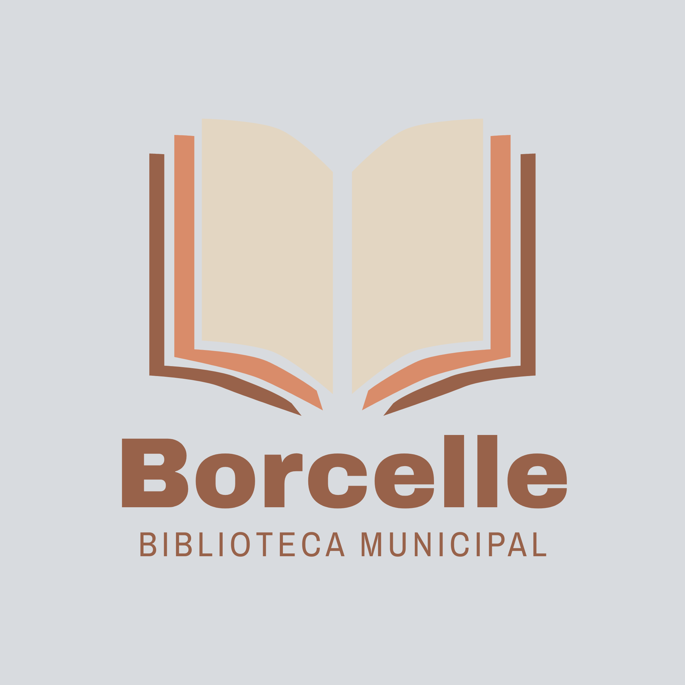

Misión Comunitaria
Garantizar el acceso libre y sin barreras a recursos bibliográficos, estimulando el hábito lector en niños, jóvenes y adultos para transformar nuestra comunidad a través de la educación constante.

Un espacio público, gratuito e inclusivo pensado para fomentar la lectura, el pensamiento crítico y el encuentro entre vecinos de todas las edades.
Nacida como una iniciativa de los vecinos y líderes comunitarios, la Biblioteca Barrial busca democratizar el acceso a la literatura y crear un refugio seguro para el estudio, la investigación escolar y el deleite de la lectura.
Garantizar el acceso libre y sin barreras a recursos bibliográficos, estimulando el hábito lector en niños, jóvenes y adultos para transformar nuestra comunidad a través de la educación constante.
Descubre las últimas obras literarias donadas e incorporadas al catálogo durante este mes.
Por Gabriel García Márquez
«Muchos años después, frente al pelotón de fusilamiento, el coronel Aureliano Buendía había de recordar aquella tarde remota en que su padre lo llevó a conocer el hielo.»
Por Jorge Icaza
«La obra cumbre del indigenismo ecuatoriano que retrata con crudeza la dignidad, el trabajo campesino y la lucha por la tierra.»
Por Antoine de Saint-Exupéry
«He aquí mi secreto, que no puede ser más simple: solo con el corazón se puede ver bien; lo esencial es invisible para los ojos.»
Consulte la disponibilidad de ejemplares clasificados por género literario y los plazos máximos para retiro a domicilio.
| Categoría Temática | Ejemplares Disponibles | Tiempo Máximo | Modalidad Autorizada | Renovaciones |
|---|---|---|---|---|
| Novela y Narrativa Contemporánea | 120 títulos | 15 días calendario | Domicilio y Sala | Hasta 2 veces |
| Literatura Infantil y Cuentos | 85 títulos | 21 días calendario | Domicilio y Sala | Hasta 1 vez |
| Historia y Realidad Ecuatoriana | 60 títulos | 10 días calendario | Domicilio y Sala | Hasta 2 veces |
| Diccionarios y Enciclopedias | 45 volúmenes | Mismo día | Exclusivo consulta en Sala | No aplica |
| Revistas y Periódicos Comunitarios | 70 ejemplares | 7 días calendario | Domicilio y Sala | Hasta 1 vez |
Conozca los lineamientos del servicio de biblioteca comunitaria. Haga clic o presione Enter para desplegar cada consulta.
Para obtener tu carnet de lector, solo debes acudir a la biblioteca con una copia física o digital de tu documento de identidad y un comprobante de servicio básico (luz, agua o teléfono) que verifique tu domicilio en el barrio. El trámite es inmediato, gratuito y no requiere renovación anual.
Cada usuario con carnet comunitario activo puede retirar hasta un máximo de tres (3) libros simultáneos. Si estás al día en la fecha de devolución, puedes gestionar una renovación presencial o mediante nuestro formulario web.
Nuestra biblioteca barrial no aplica multas monetarias. En caso de retraso no justificado, se aplica una pausa temporal en el derecho a préstamo a domicilio equivalente a la cantidad de días de demora. Fomentamos la responsabilidad comunitaria y el respeto al derecho del próximo lector.
Recibimos con gratitud donaciones de libros de literatura, ciencia, texto escolar e infantil en buen estado de conservación. Puedes entregarlos de martes a sábado en el mostrador principal o escribirnos previamente para coordinar la entrega.
Planifica tu visita a la sala de estudio o agenda el retiro anticipado de ejemplares completando el siguiente formulario.